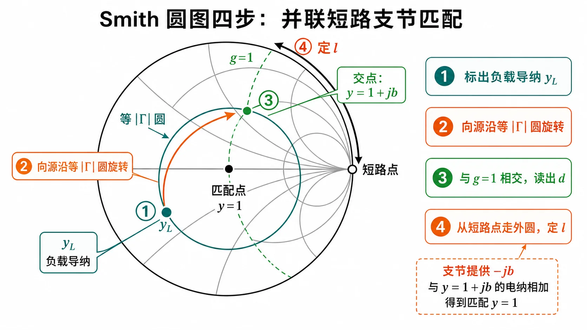
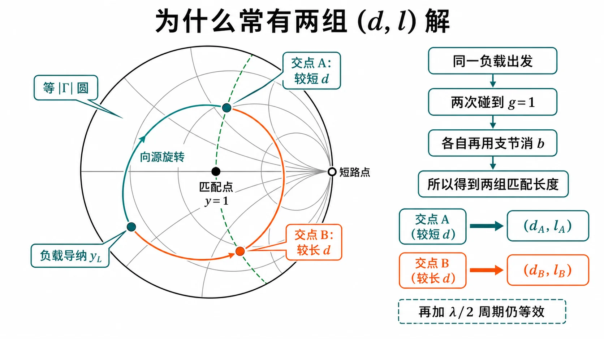
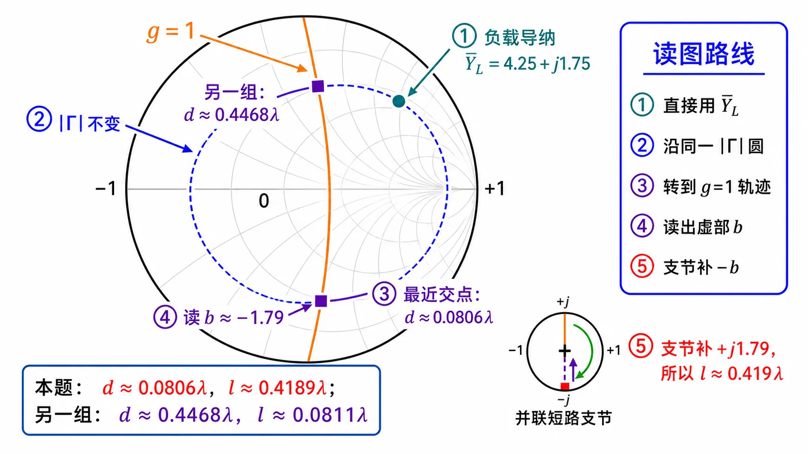

第二次作业 · Lec08–09 · 第 5 题§
对应知识点：03-并联支节匹配
导航： 总目录 · 符号与导读 · Lec08–09 总册 · Lec06 · Lec07 · 附录
第 5 题§
（对应大纲 Lec08–09 作业 第 5 题；该讲教材章节 §1.6。）
题目复述§
$Y_L=(0.0425+\mathrm{j}0.0175)\,\mathrm{S}$，$Z_c=100\,\Omega$，并联短路支节匹配（主线、支线均为 $100\,\Omega$）。求 $d$、$l$。
图解辅读（与第 4 题同一作图套路）§
本题仍为 并联短路单支节，圆图步骤与 第 4 题、Lec08–09 总册 「图解辅读」 相同；负载导纳直接给出时，起点为 $\bar Y_L=Y_L Z_c$（高电导区），常出现 两组 $(d,l)$，可对照下图 两交点 理解。


详细思路§
工程/物理目标：与第 4 题相同（单支节匹配到 $Z_c$），题面以 导纳 $Y_L$ 给出负载，便于 直接归一化 $\bar Y_L$ 上 Smith，减少 $Z\leftrightarrow Y$ 换算步骤。
$\bar Y_L=Y_L Z_c$；其余同第 4 题。
思路叙述：
（与 第 4 题 同型；匹配方程形式见 第 1 题。）先 $Z_L=1/Y_L$，或直接用 $\bar Y_L$ 写 $Y(d)$ 条件。
解法一：公式（解析）§
一步步解答§
$$ \bar Y_L=Y_L Z_c=(0.0425+\mathrm{j}0.0175)\times 100=4.25+\mathrm{j}1.75,\qquad Y_c=0.01\,\mathrm{S}. $$
记 $\bar Y_L=g_0+\mathrm{j}b_0=4.25+\mathrm{j}1.75$。沿线归一化导纳（与第 4 题同形）
$$ \bar Y(d)=\frac{g_0+\mathrm{j}(b_0+t)}{1+\mathrm{j}\bar Y_L t} =\frac{g_0+\mathrm{j}(b_0+t)}{(1-b_0 t)+\mathrm{j}g_0 t}. $$
与第 4 题相同的 $\mathrm{Re}(N D^\ast)=g_0(1+t^2)$、$|D|^2=(1-b_0 t)^2+(g_0 t)^2$，令 $\mathrm{Re}\,\bar Y=1$ 得
$$ g_0(1+t^2)=(1-b_0 t)^2+(g_0 t)^2. $$
代入 $g_0=4.25$、$b_0=1.75$：左边 $4.25+4.25t^2$；右边
$$ (1-1.75t)^2+(4.25t)^2=1-3.5t+3.0625t^2+18.0625t^2=1-3.5t+21.125t^2. $$
移项整理
$$ 16.875\,t^2-3.5\,t-3.25=0 \quad\Rightarrow\quad t_1\approx 0.55464,\ \ t_2\approx -0.34724. $$
由 $t$ 求 $d$ 取 $\beta d=\arctan t$ 的主值并映射到 $(0,\pi)$ 内正电长度（与第 4 题同）：$d/\lambda=\dfrac{\beta d}{2\pi}$。
- 取 $t_1\approx 0.55464$（常对应顺时针第一次碰到 $g=1$、$d$ 较短）： $\beta d=\arctan t_1\approx 0.5064\,\mathrm{rad}$，$d\approx 0.08060\lambda$。代回算得 $\mathrm{Im}\,\bar Y(d)\approx -1.7905$。短路枝节满足 $\mathrm{Im}\,\bar Y-\cot\beta l=0$，即 $\cot\beta l\approx -1.7905$，$\tan\beta l\approx -0.5585$；取枝节长度在 $(0,\lambda/2)$ 内的常用支：$\beta l\approx \pi+\arctan(-0.5585)\approx 2.630\,\mathrm{rad}$，$l\approx 0.4189\lambda$。
- 取 $t_2\approx -0.34724$： $\beta d=\arctan t_2+\pi\approx 2.8074\,\mathrm{rad}$，$d\approx 0.44681\lambda$。该点 $\mathrm{Im}\,\bar Y\approx +1.7905$，$\tan\beta l\approx 0.5585$，$l\approx 0.08107\lambda$（圆图上另一 $g=1$ 交点；另加 $\lambda/2$ 周期可得等价解）。
标准解答§
-
$\bar Y_L=4.25+\mathrm{j}1.75$；一组常用解： $d\approx 0.08060\lambda$，$l\approx 0.4189\lambda$；另一组解： $d\approx 0.4468\lambda$，$l\approx 0.0811\lambda$（多解、$\lambda/2$ 周期仍适用）。
-
检验/注意： 负载以导纳给出时，先归一化导纳更贴近圆图习惯。
解法二：圆图（Smith）§

图：高电导区负载；取距负载最近的交点与解析一组解一致。
读图说明（零基础）
- 起点：$\bar Y_L=4.25+\mathrm{j}1.75$ 在 高电导区（靠近外圆附近），与第 4 题低阻负载在图上的位置感不同，但 套路相同。
- 橙线 $g=1$：仍表示 $\mathrm{Re}\,\bar Y=1$；顺时针 第一次交点 → 最短 $d$，与数值 $d\approx 0.0806\lambda$ 对齐。
- 外圆枝节：交点处读出 $b$，从 短路点 沿外圆走到 $-b$，得 $l/\lambda\approx 0.419$（与解析 $\approx 0.4189$ 一致）。
- 自检：与 解法一 数值一致；若选 更远 的 $g=1$ 交点，会得到另一组 $(d,l)$，属正常多解。
圆图操作步骤
- $\bar Y_L=Y_L Z_c=4.25+\mathrm{j}1.75$ 已在题中给出，直接在 导纳圆图 上标出（高电导区一点）。
- 沿 等 $|\Gamma|$ 圆 向源（顺时针） 转，与 $g=1$ 圆求交；取 距负载最近 的交点，读 $d/\lambda\approx 0.0806$。
- 在该交点读 电纳 $b$，用 并联短路支节 从 短路点 沿外圆转到 抵消 该电纳，得 $l/\lambda\approx 0.419$（约 $0.4189$）。
- 多交点、$\lambda/2$ 周期与另选支路解，与 「常见疑惑点」 一致，须在图上逐段说明。
常见疑惑点§
- 疑惑： 文档里一组解写 $d\approx 0.0806\lambda$，圆图上会不会对应更远的位置？解答： 会；满足实部条件的 $d$ 常有多处，工程上多取距负载最近的解（与数值搜索「最短 $d$」一致），其余解加上 $\lambda/2$ 周期仍可能成立。
- 疑惑： $\bar Y_L=Y_L Z_c$ 量纲对吗？解答： $Y_L$ 为西门子，$Z_c$ 为欧姆，乘积为无量纲，即归一化导纳，与 Smith 圆图一致。
同讲各题：1 · 2 · 3 · 4 · 5 · 6 · 7
返回总册：Lec08–09 总册